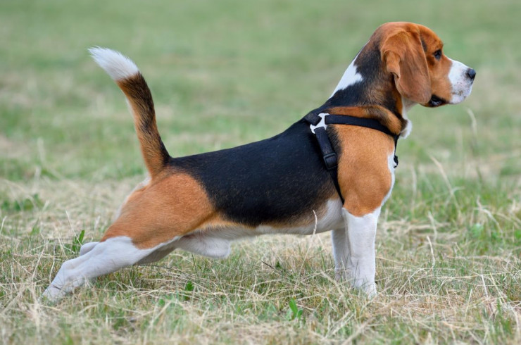

Cобака "Бигль"
Фотографии породы:

Описание породы:
Среднего размера, внешне сходна с фоксхаундом, но мельче, с более короткими ногами и более длинными и мягкими ушами (по стандарту породы уши должны доходить до кончика носа). Рост — от 33 до 40 см в холке, масса — между 9 и 14 кг, суки мельче кобелей. Бигли обладают хорошим обонянием и используются прежде всего для охоты на кроликов и зайцев, очень часто используются на таможне для поиска взрывчатых веществ. Бигли очень активные и шаловливые. Обучение и воспитание биглей несложное.
Особенности породы:
- Выведена в XV веке
- Используются как собака-компаньон
- Вес взрослой собаки: 9-10 кг (самки), 10-11 кг (самцы)
- Рост:33-38 см (самки), 36-41 см (самцы)
- Живут 12-15 лет